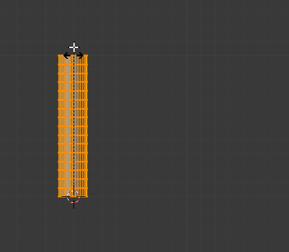
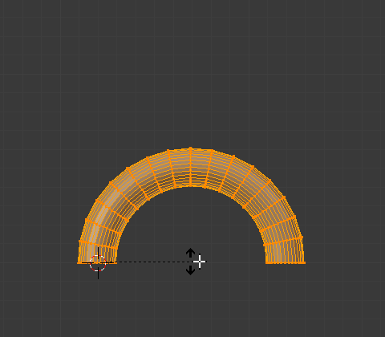

Bend¶
Reference
| Mode: | Object and Edit Modes |
|---|---|
| Menu: | |
| Hotkey: | Shift-W |

Before. |

Clamp on. |

Clamp off. |
{kind=link}
{kind=link}
This tool rotates a line of selected elements forming an arc between the mouse cursor and the 3D cursor.
Usage¶
The Bend tool can be used in any case where you might want to bend a shape in two with a gradual transition between both sides.
This may take a little getting used to, the basics are listed below controls are noted here:
- The initial position of the cursors define the axis to bend on.
- The distance of the mouse cursor to the 3D cursor controls how sharp the bend will be.
- The relative angle of the mouse cursor to the initial axis defines the bend angle.
If this seems overly complicated, it’s probably best to try the tool where it becomes quickly apparent how the tool reacts to your input.
- Bend Angle
- The amount of rotation.
- Radius
- The sharpness of the bend.
- Clamp
Normally the arc turns through a clamped rotation angle with the selected elements extended along a tangent line beyond that (see above left). When the clamp is deactivated, the arc continues around aligning the selected elements into a circle (right).
When off Alt all selected elements follow a circle, even when outside the segment between the 3D cursor and the mouse.
Note
Unlike most other transform modes, Bend is not effected by Pivot Point or Transform Orientation, always using the View Plane instead.
Hint
You can turn the bend angle through multiple rotations potentially forming a spiral shape.

Bend Transform example.